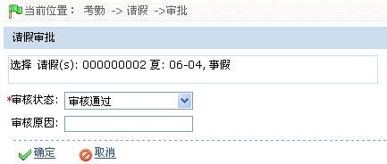

7.6.2请假---请假管理
对于不同的请假情况，需要操作员根据手动录入请假信息。系统根据录入的请假再做最后的考勤统计。
（1）、单击【考勤】 【请假】，进入请假页面。
【请假】，进入请假页面。
（2）、单击请假页面上的【新增请假】图标，进入新增请假页面：

根据需要进行参数设置，具体设置方法如下：
人员：选择需请假的人员（可多选）。人员的选择请参见附录1 常用操作中的1. 人员选择。
开始时间、结束时间：设置请假的日期与时间，日期与时间的设置，请参见附录1 常用操作中的8. 选择日期与时间。
假类：设置该请假的请假类型。单击 按钮，在弹出的下拉框中选择假类。
按钮，在弹出的下拉框中选择假类。
请假原因：输入请假原因。
填写时间：新增请假记录的时间，由系统默认生成。
（2）、设置完成后，单击【确定】按钮，保存并返回请假页面，此时请假列表中将显示刚新增的请假信息。
 注意：新增请假时，用户单击【保存】按钮后，系统能自动判断请假的时间是否重复输入（相同假类相同时间），若重复，系统会弹出如下图所示提示：
注意：新增请假时，用户单击【保存】按钮后，系统能自动判断请假的时间是否重复输入（相同假类相同时间），若重复，系统会弹出如下图所示提示：

-
 审批请假
审批请假
 注意：系统管理员添加的请假，添加成功即审核通过。员工在员工自助系统添加的请假，须管理员审批。
注意：系统管理员添加的请假，添加成功即审核通过。员工在员工自助系统添加的请假，须管理员审批。
 备注：员工自助添加成功的请假，未审批前的状态为“申请”。
备注：员工自助添加成功的请假，未审批前的状态为“申请”。
（1）、在请假列表中，单击选中需审批的请假记录，然后单击请假列表左上方的【审批】按钮，进入审批请假页面：

审核状态：单击 按钮，在弹出的下拉框中，选择审核状态，可选择为“审核通过”或“拒绝”。
按钮，在弹出的下拉框中，选择审核状态，可选择为“审核通过”或“拒绝”。
审核原因：输入审核原因。
（2）、设置完成后，单击【确定】按钮，保存并返回请假页面。此时请假列表中将显示审批后的请假信息。